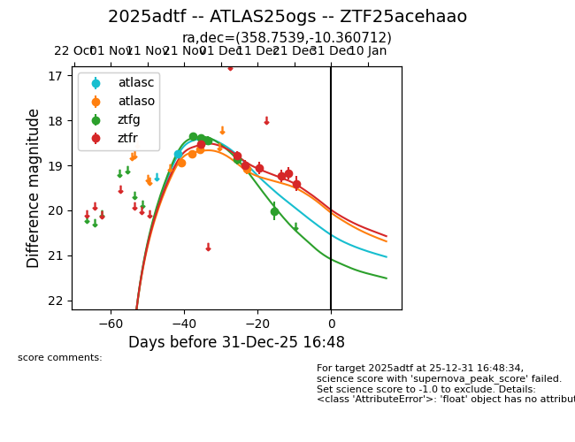
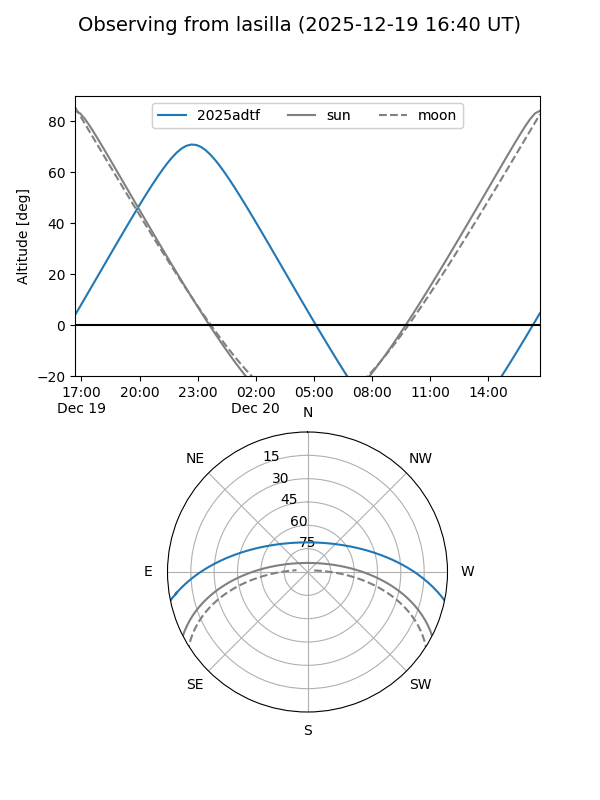
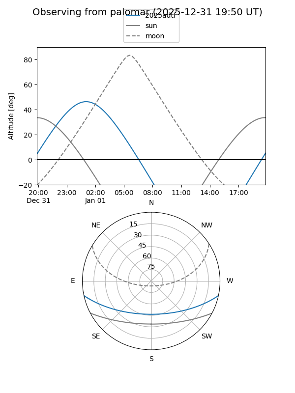
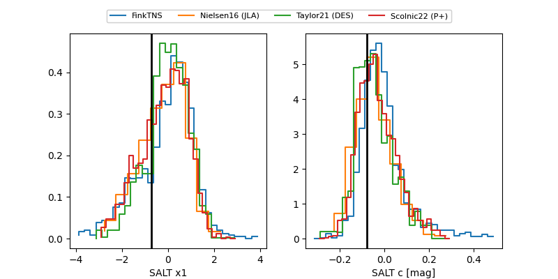

2025adtf
Target 2025adtf at 2025-12-31 17:00
Aliases and brokers:
FINK:
Lasair:
ALeRCE:
TNS:
YSE:
alt names
ZTF25acehaao (ztf,fink_ztf)
2025adtf (tns,yse)
ATLAS25ogs (atlas)
Coordinates:
equatorial (ra, dec) = 358.7539,-10.36071
equatorial (HMS+DMS) = 23:55:00.94,-10:21:38.56
galactic (l, b) = (81.8476,-68.60475)
Flags:
Photometry:
last atlasc=18.73, atlaso=19.08, ztfg=20.01, ztfr=19.40
1 atlasc, 4 atlaso, 5 ztfg, 7 ztfr detections
Lightcurve

Visibility


Additional plots
